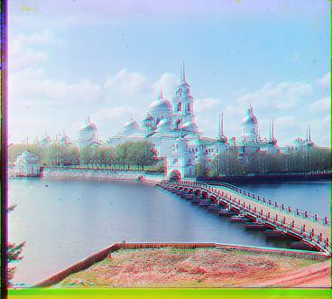

melons.tif

Red Shift: (-16, 11)
Green Shift: (-12, 8)
monastery.jpg
Red Shift: (-15, 0)
Green Shift: (-13, 2)
Sergei Mikhailovich Prokudin-Gorskii sought to produce color photographs by taking three exposures of scenes using red, blue and green filters. This project takes digitized Prokudin-Gorskii glass plate images, and automatically aligns the red, blue, and green channels to produce the clearest color image possible.
First, I cropped the image. I found that cropping 1.5% off the top and bottom and 3% off the sides yielded the best results.
For my error metric to be used for alignment, I chose to use normalized cross correlation (NCC). This involved flattening the images, calculating the dot product of the flattened images, and then normalizing them. This NCC metric was used for both the naive full-search approach and for the pyramid. I chose the shift values that yielded the largest NCC values.
For the smaller .jpg images, I perform a simple naive search over the range (-15, 15) to test every possible shift of x and y with a nested for loop. I find the best shift based on whichever one gives me the highest NCC value.
For the larger .tif images, I used a recursive image pyramid with 3 layers. Each layer of the pyramid is downscaled by 2 from the previous layer. To construct the pyramid, the image is recursively downsized by a factor of 2, until the image dimensions are smaller than 360 or if the lowest level is reached. At this level, I perform a full (-15, 15) search. Otherwise, for higher levels of the pyramid, I search over just a smaller (-3, 3) window. Then, the images are rescaled back up.
One unexpected issue was that upon initially running my algorithm on lady.tif and self_portrait.tif, the red_shift was slightly off. This may have been caused by the wider black lines and distortion near the edges, because I was able to produce better images by simply increasing the crop on the sides from 3% to 4% for these images.
Red Shift: (-9, 3)
Green Shift: (-7, 2)
Red Shift: (-134, -4)
Green Shift: (-72, 0)
Red Shift: (-91, 42)
Green Shift: (-48, 24)
Red Shift: (-69, 13)
Green Shift: (-36, 15)
Red Shift: (-104, 22)
Green Shift: (-57, 17)
Red Shift: (-84, 10)
Green Shift: (-42, 0)
Red Shift: (-16, 11)
Green Shift: (-12, 8)
Red Shift: (-15, 0)
Green Shift: (-13, 2)
Red Shift: (-84, 36)
Green Shift: (-44, 25)
Red Shift: (-55, -26)
Green Shift: (-64, -11)
Red Shift: (-22, 35)
Green Shift: (-22, 26)
Red Shift: (-81, 9)
Green Shift: (-41, 12)
Red Shift: (-14, 3)
Green Shift: (-7, 2)
Red Shift: (-107, 29)
Green Shift: (-54, 2)